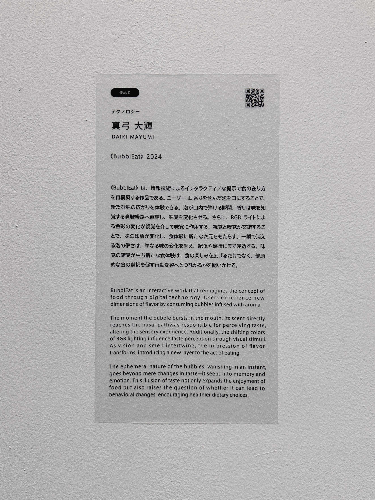
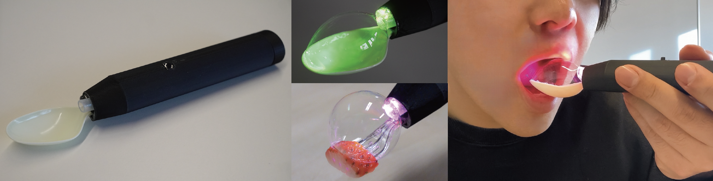

BubblEat
CHI EA '25 / Olfactory Interface
Traditional olfactory delivery methods, such as airflow, vaporization, heating, and atomization, struggle to effectively deliver retronasal smell during eating. This study introduces BubblEat, a cutlery device that places aroma-infused bubbles on a spoon, releasing scents upon bursting in the mouth to enhance retronasal olfactory perception.
To optimize bubble-based aroma delivery, we examined liquid viscosity, key factors influencing stability and aroma release. Based on these findings, we developed a BubblEat prototype with a bubble generation mechanism capable of delivering stable, user-friendly aroma-infused bubbles. We designed BubblEat to achieve enhancing dining experiences by effectively presenting retronasal smells. This study demonstrates the feasibility of bubble-based aroma delivery, complementing orthonasal smell and opening new avenues for sensory-enhanced dining.




- BubblEat: Designing a Bubble-Based Olfactory Delivery for Retronasal Smell in Every Spoonful